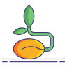
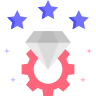
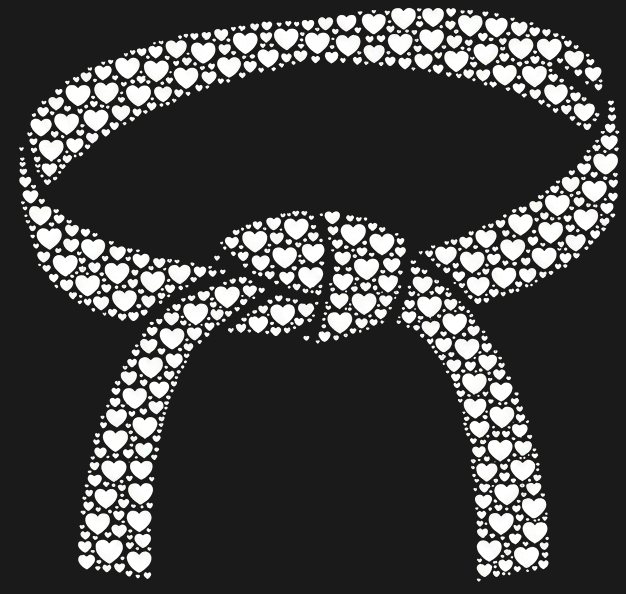

En el karate, el camino se recorre paso a paso, con paciencia y entrega. He diseñado este recorrido para combinar tu amor por el Karate y mi pasión por la programación.
Desde el color blanco de la primera mirada hasta el negro del mayor privilegio.
Esta etapa representa el inicio de todo: la pureza del primer instante en que nuestras miradas se encontraron y nació la primera sonrisa.

Esta etapa representa el despertar de la curiosidad, donde las primeras risas compartidas nos permitieron descubrir todo lo que nos une.
Esta etapa representa el momento de la decisión de querer formar algo más contigo. Ambos nos sentimos cómodos con el otro y comenzamos a construir una base sólida donde caminar.
Esta etapa representa el florecer de mi afecto hacia ti, donde la seguridad de un abrazo y mis explosiones de cariño marcaron nuestro avance.
Esta etapa representa nuestra capacidad de fluir, entendiéndonos sin necesidad de palabras y adaptándonos al ritmo del otro.
Esta etapa representa el puente hacia el futuro, uniendo los descubrimientos del inicio con la madurez de lo que hoy estamos construyendo.
Esta etapa representa el coraje y la pasión que necesitamos para poder hacer que esto funcione de la forma en la que ambos queremos (y también que te quieres poner mamadísima).

Esta etapa representa el esfuerzo por pulir nuestra relación, buscando ese equilibrio perfecto que funcione para ambos.

Esta etapa representa el mayor privilegio para mi: poder llegar a tener una relación que no sientas como una carga, donde siempre puedas ser tú misma y sigamos aprendiendo juntos este camino.
Te quiero ♡
— Fernando